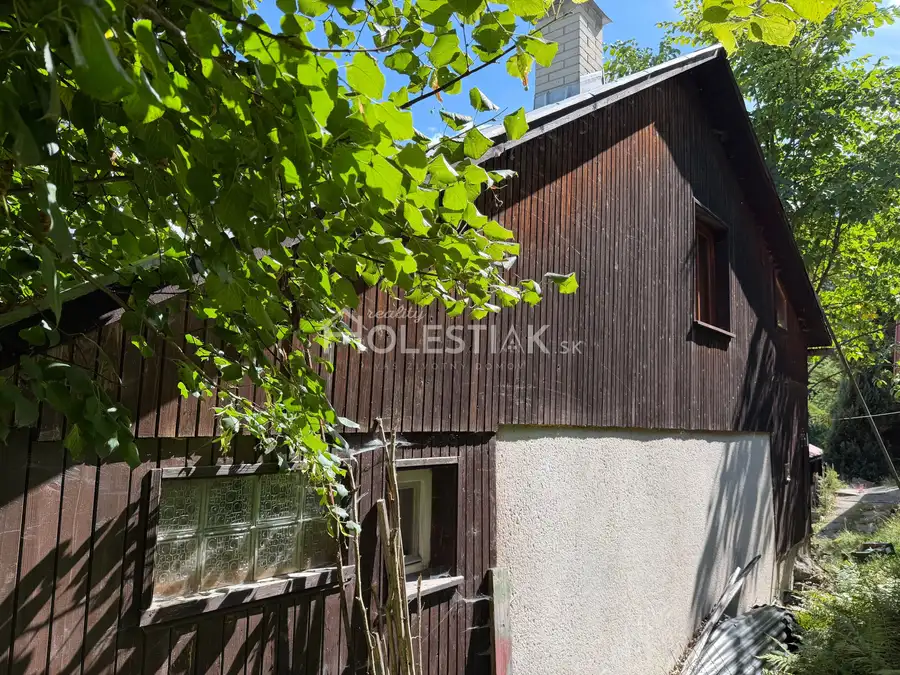
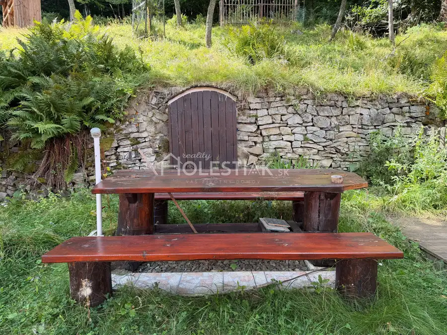
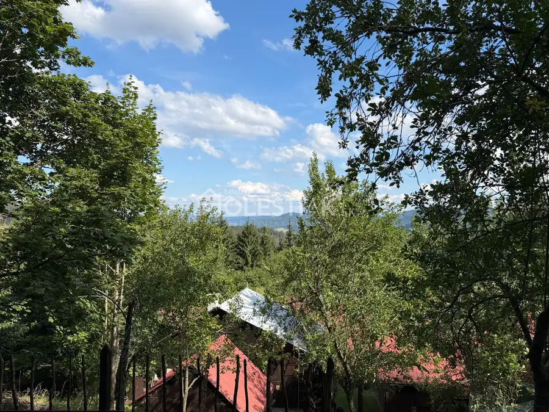
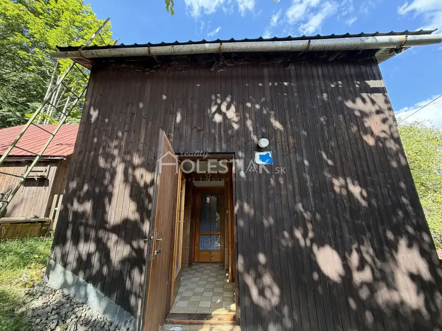
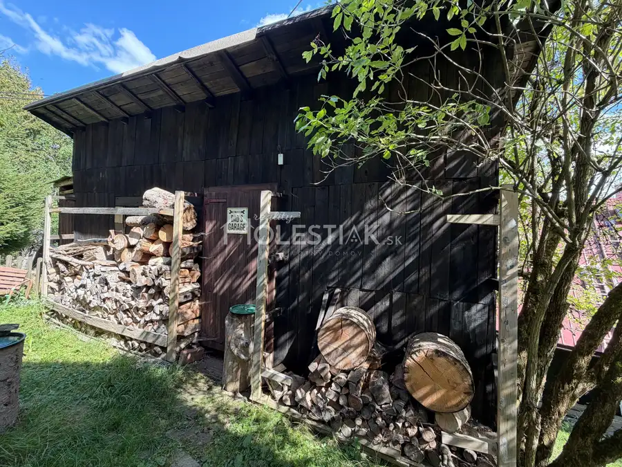

Predaj · Chata, drevenica, zrub
Predám chatu v obci Makov na Kysuciach, iba u nás
Makov
84 000 €1 615 € za m²






- Plocha52 m²
- StavČiastočná rekonštrukcia
O nehnuteľnosti
Ponúkame exluzívne na predaj peknú dvojpodlažnú, zariadenú chatu s popisným číslom v krásnom prostredí v obci Makov, okr. Čadca. Polosamota. Dvakrát krbové kachle. Súčasťou je kamenná pivnička, hospodárska budova s kôlňou. Plocha: úžitková 52 m2, v cene vysporiadaný pozemok: 587 m2, CKN, 1/1, bez tiarch. Voľná ihneď. Pekné výhľady v prírode, les, lúka, pokoj. Cena: 84000 € Ochotne vám poskytneme ďalšie informácie a realizujeme osobnú obhliadku. PhDr. Pavol Holeštiak, PhD., RSc. holestiak.sk reality Andreja Hlinku 28/4022 01 Čadca tel.: +421 905 425 576e-mail: pavol@holestiak.sk
Parametre
- Doprava
- Cesta
- Druh
- Chata, drevenica, zrub
- Dátum zverejnenia
- 09. 09. 2026
- Dĺžka pozemku
- 39
- Energetický certifikát budovy
- nie je
- Energie
- 11
- Orientácia
- Juhovýchodná
- Plocha pozemku
- 587 m²
- Počet izieb / miestností
- 2
- Počet kúpeľní
- 1
- Počet nadzemných podlaží
- 2
- Počet vonkajších parkovacích miest
- 1
- Príprava teplej vody
- Prietokový ohrievač (elektrický)
- Prístupová komunikácia
- Štrková
- Rok poslednej rekonštrukcie
- 2022
- Stav nehnuteľnosti
- Čiastočná rekonštrukcia
- Terén pozemku
- Mierne svahovitý
- Typ
- Predaj
- Typ konštrukcie
- Zmiešaná
- Vybavenie
- Pivnica, Predzáhradka, Vonkajšie parkovacie miesto, Špajza, Záhrada, Altánok / posedenie, Krb
- Vykurovanie
- Lokálne
- Zastavaná plocha
- 40 m²
- Zdroj tepla
- Uhlie alebo drevo
- Úžitková plocha
- 52 m²
- Šírka pozemku
- 15
Kde to je


Ďalšie ponuky
Celá ponukaMohlo by Vás zaujímať
 Komerčné priestoryNové
712 000 €+ Video Predám veľký areál Skalité, reštaurácia, penzión, rodinný dom, servis, stavebné pozemky - exkluzívne
Skalité
620 m²
Komerčné priestoryNové
712 000 €+ Video Predám veľký areál Skalité, reštaurácia, penzión, rodinný dom, servis, stavebné pozemky - exkluzívne
Skalité
620 m²
 Záhradná chatkaNové
45 300 €Predám peknú chatku - Zákopčie s väčším pozemkom
Zákopčie
20 m²
Záhradná chatkaNové
45 300 €Predám peknú chatku - Zákopčie s väčším pozemkom
Zákopčie
20 m²
 PozemokNové
Cena na vyžádáníPredám pozemok pod chatu - Hlboké nad Váhom, iba u nás
Hlboké nad Váhom
470 m²
PozemokNové
Cena na vyžádáníPredám pozemok pod chatu - Hlboké nad Váhom, iba u nás
Hlboké nad Váhom
470 m²